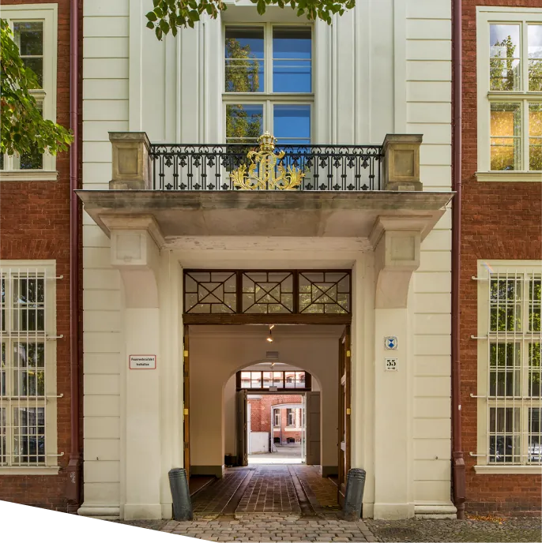
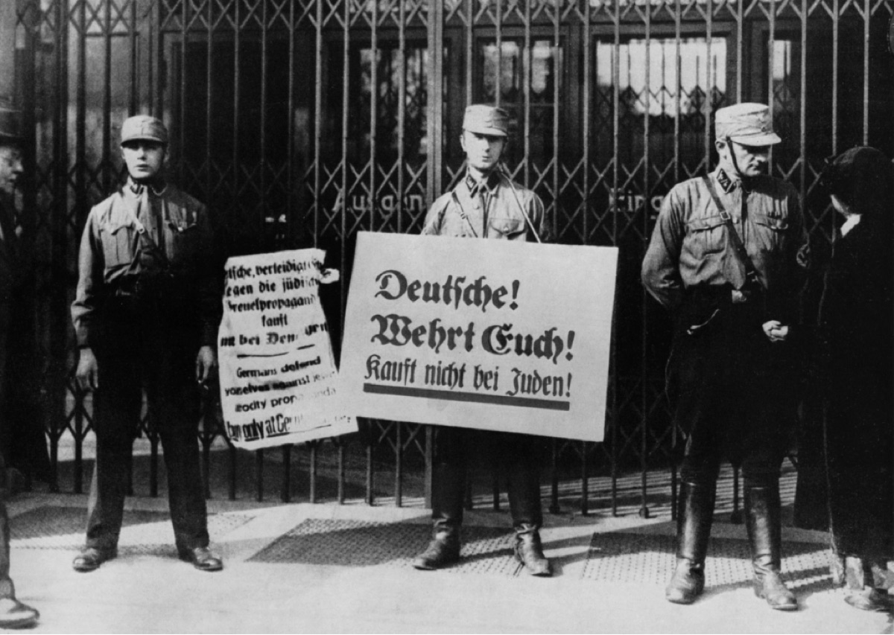
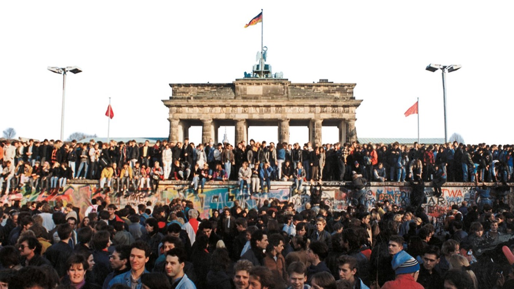
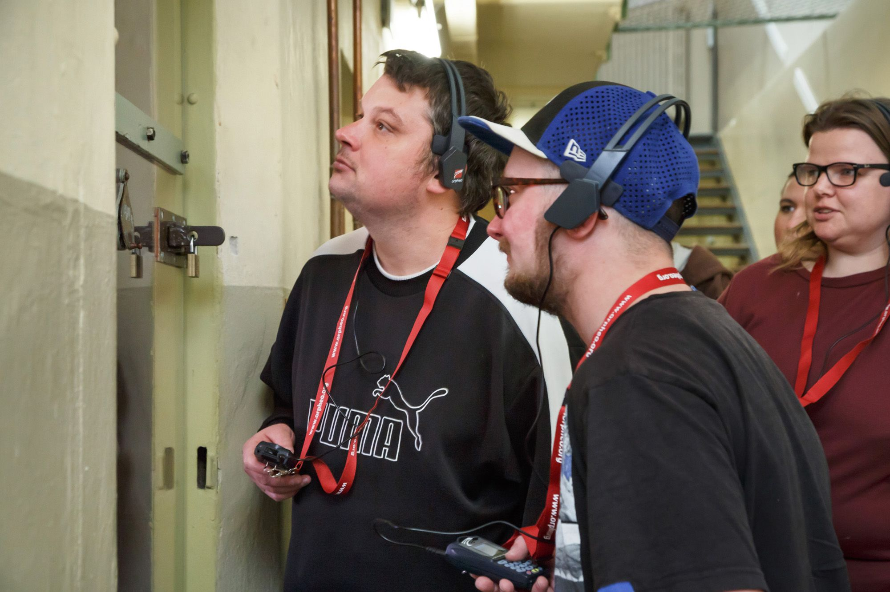

Verfolgung. Widerstand. Freiheit.
Ein Ort — viele Geschichten.
Die Gedenkstätte Lindenstraße ist ein ehemaliger Haft- und Gerichtsort im Zentrum Potsdams. Sie erinnert an politische Verfolgung im Nationalsozialismus, unter sowjetischer Besatzung und in der SED-Diktatur – sowie an die Friedliche Revolution von 1989/90.

Zeitschichten
Historische Zusammenhänge verstehen

Vier Zeitschichten strukturieren die Geschichte der Lindenstraße: Nationalsozialismus, sowjetische Besatzungszeit, SED-Diktatur und Friedliche Revolution. Sie erklären die jeweiligen politischen und gesellschaftlichen Zusammenhänge und bilden den Kontext für Ausstellungen, Biografien und weitere Inhalte.



